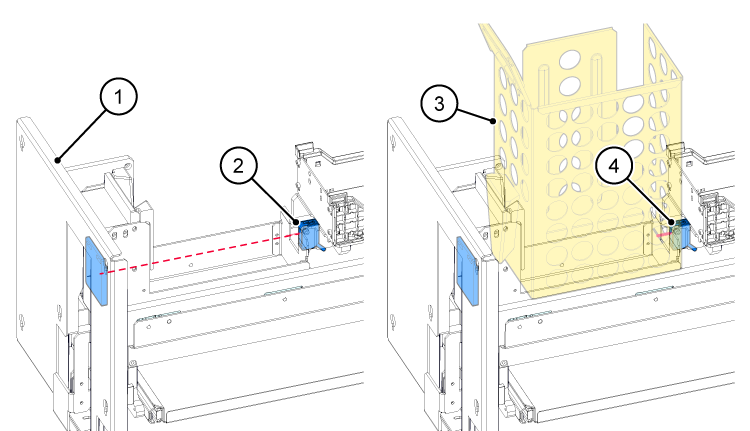
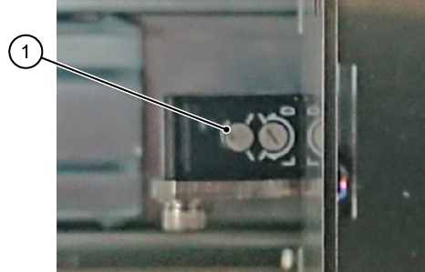

Adjusting the DispoTip Stocker Waste Bin Sensor
This topic includes information about how to adjust the DispoTip Stocker waste bin sensor.
- Open the disposable tip feeder drawer. See Opening the Disposable Tip Feeder Drawer for more information.
-
Remove and insert the tray waste bin. Observe whether the tray bin sensor LED light turns on and off.
Tray Waste Bin
Sensor LED Status
Absent
Off
Present
On
Figure 129: Waste bin removed; waste bin installed 
1 Drawer 2 Tray waste bin sensor (OFF) 3 Tray waste bin 4 Tray waste bin sensor (ON) -
If the LED light does not turn off and on, rotate the dials on the trimmer on the sensor.
Figure 130: Trimmer 
1 Trimmer - Remove and insert the tray waste bin. Confirm that the tray bin sensor LED light turns on and off.
Verification
Complete the verification of service repair. See Verification of Service Repairs for more information.